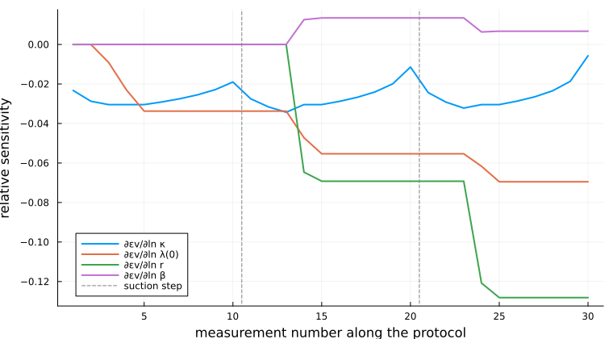

Differentiating with respect to the parameters
Every constitutive law in this package is parameterised by the type of its coefficients — BBM{T}, never κ::Float64 — so a ForwardDiff.Dual can be placed in a material parameter, not only in the strain. This page is what that buys.
The distinction matters more than it looks. A solver that differentiates with respect to its unknowns gets a Jacobian and therefore Newton's method; that is table stakes, and VoronoiFVM and Ferrite already provide it. Differentiating with respect to the parameters answers a different class of question: which parameters does my experiment actually determine, how uncertain is a calibrated value, and which measurement would reduce that uncertainty. Those are the questions a soil laboratory asks, and they need derivatives that finite differences can only approximate — noisily, and at a cost that grows with the number of parameters.
The Barcelona Basic Model is the hard case, so it is the one used here. Its response goes through a return mapping — a Newton solve — and each step of a stress-controlled path goes through another. Derivatives have to survive both.
using PoroMechanics
using Tensors
using ForwardDiff
using LinearAlgebra
using Printf
using Random
using PlotsSensitivities, and the zeros only automatic differentiation can see
A deviatoric path with a suction step, so that every parameter has a chance to matter.
reference = (κ = 0.011, λ0 = 0.065, r = 0.75, β = 2.0e-5, M = 1.2, k_s = 0.8, κ_s = 0.005, nu = 0.15)
parameter_names = collect(string.(keys(reference)))
function piecewise_linear(ts, fs, t)
t <= first(ts) && return first(fs)
t >= last(ts) && return last(fs)
i = findlast(<=(t), ts)
i == length(ts) && return last(fs)
return fs[i] + (fs[i + 1] - fs[i]) * (t - ts[i]) / (ts[i + 1] - ts[i])
end
"Final state of a deviatoric, suction-stepped path, as a function of the eight parameters."
function deviatoric_path(θ; nstep = 200)
m = BBM(
κ = θ[1], λ0 = θ[2], r = θ[3], β = θ[4],
M = θ[5], k_s = θ[6], κ_s = θ[7], nu = θ[8],
)
T = eltype(θ)
st = initial_state(m, -1.0e3 * one(SymmetricTensor{2, 3, T}), T(4.0e4); suction = zero(T))
Δt = 3.0 / nstep
for k in 1:nstep
t = k * Δt
p = 1.0e3 * piecewise_linear([0, 1, 2, 3], [1, 40, 1, 80], t)
q = 1.0e3 * piecewise_linear([0, 1, 2, 3], [0, 20, 1, 40], t)
s = 1.0e3 * piecewise_linear([0, 1.999, 2, 3], [0, 0, 40, 40], t)
σ = SymmetricTensor{2, 3, T}(
(i, j) -> i != j ? zero(T) :
i == 2 ? T(-(p + 2q / 3)) : T(-(p - q / 3))
)
_, _, st, _ = stress_controlled_response(m, σ, T(s), st, Δt)
end
return st
end
θ_ref = collect(values(reference))
observable(θ) = deviatoric_path(θ).εv_p
gradient_ad = ForwardDiff.gradient(observable, θ_ref)
gradient_fd = map(eachindex(θ_ref)) do i
h = 1.0e-6 * abs(θ_ref[i])
θp = copy(θ_ref); θp[i] += h
θm = copy(θ_ref); θm[i] -= h
(observable(θp) - observable(θm)) / (2h)
end
println("∂εv_p/∂θ")
println(" parameter automatic differentiation central differences")
for i in eachindex(θ_ref)
@printf(" %-10s %+.10e %+.10e\n", parameter_names[i], gradient_ad[i], gradient_fd[i])
end∂εv_p/∂θ
parameter automatic differentiation central differences
κ -6.0737925136e-01 -6.0737924933e-01
λ0 +3.8062668251e-01 +3.8062668279e-01
r +5.8955667903e-02 +5.8955667905e-02
β -4.8105833541e+02 -4.8105833527e+02
M -6.2099194573e-03 -6.2099194782e-03
k_s -1.3282771584e-03 -1.3282771671e-03
κ_s -7.1435018823e-18 -1.3877787808e-09
nu +1.7662478790e-13 -6.9388939039e-11Six of the eight agree to nine or ten digits. The other two are the interesting ones.
$\partial \varepsilon_v^p/\partial \kappa_s$ and $\partial \varepsilon_v^p/\partial \nu$ come back as $10^{-18}$ and $10^{-13}$ from automatic differentiation, and as $10^{-10}$ from finite differences. Automatic differentiation is right and the finite differences are noise: the path is prescribed in stress, and under stress control the plastic strain is fixed by the yield surface and the hardening law alone. The elastic constants decide what strain accompanies that stress, not how much of it is plastic. The derivative is therefore structurally, exactly zero.
That is not a curiosity. A calibration that fits $\varepsilon_v^p$ and tries to determine $\nu$ from it is fitting nothing, and a finite-difference gradient will hide that behind a small non-zero number rather than reporting it.
Which parameters can an experiment determine?
The usual identification experiment for the loading–collapse curve is isotropic compression repeated at several suctions. Four parameters shape it: $\kappa$ and $\lambda(0)$ set the elastic and virgin compression lines, and $r$ and $\beta$ set how $\lambda$ falls with suction,
\[\lambda(s) = \lambda(0)\left[(1-r)\,e^{-\beta s} + r\right]\]
Whether a given choice of suction levels determines all four is a question about the rank of $\partial(\text{measurements})/\partial(\text{parameters})$ — a matrix this package can produce exactly.
Parameters are scaled by their reference values, so the Jacobian is dimensionless and its condition number means something. Without that, comparing a sensitivity to $\kappa \approx 10^{-2}$ with one to $\beta \approx 10^{-5}$ would be comparing units.
identification_names = ["κ", "λ(0)", "r", "β"]
θ_lc = [reference.κ, reference.λ0, reference.r, reference.β]
"Isotropic compression at a sequence of suctions; returns the measured volumetric strains."
function compression_protocol(θ, legs; nsub = 30, every = 6)
m = BBM(κ = θ[1] * θ_lc[1], λ0 = θ[2] * θ_lc[2], r = θ[3] * θ_lc[3], β = θ[4] * θ_lc[4])
T = eltype(θ)
I3 = one(SymmetricTensor{2, 3, T})
st = initial_state(m, -1.0e3 * I3, T(4.0e4); suction = zero(T))
measurements = T[]
p_now, s_now = 1.0e3, 0.0
for (s, p_max, p_min) in legs
for k in 1:15 # change the suction at constant stress
_, _, st, _ = stress_controlled_response(
m, -p_now * I3, T(s_now + (s - s_now) * k / 15), st, 1.0
)
end
s_now = s
for (a, b) in ((p_now, p_max), (p_max, p_min)) # load, then unload
for k in 1:nsub
_, _, st, _ = stress_controlled_response(
m, -(a + (b - a) * k / nsub) * I3, T(s), st, 1.0
)
k % every == 0 && push!(measurements, tr(st.ε))
end
end
p_now = p_min
end
return measurements
end
plausible = [(0.0, 100.0e3, 10.0e3), (100.0e3, 200.0e3, 10.0e3), (300.0e3, 300.0e3, 10.0e3)]
informative = [(0.0, 80.0e3, 20.0e3), (50.0e3, 200.0e3, 20.0e3), (150.0e3, 400.0e3, 20.0e3)]
function report_design(label, legs)
J = ForwardDiff.jacobian(θ -> compression_protocol(θ, legs), ones(4))
F = svd(J)
@printf("%s\n singular values: %s\n", label, join([@sprintf("%.2e", x) for x in F.S], " "))
@printf(
" weakest direction: %s\n\n", join(
[@sprintf("%s %+.2f", identification_names[i], F.V[i, end]) for i in 1:4], " "
)
)
return F
end
svd_plausible = report_design("Suctions 0, 100, 300 kPa — a plausible choice", plausible)
svd_informative = report_design("Suctions 0, 50, 150 kPa", informative)LinearAlgebra.SVD{Float64, Float64, Matrix{Float64}, Vector{Float64}}
U factor:
30×4 Matrix{Float64}:
-0.0109983 0.122542 0.389149 0.0647205
-0.0135826 0.151336 0.480587 0.0799278
-0.0244275 0.195146 0.361067 0.0254921
-0.0396297 0.247798 0.136291 -0.0642643
-0.0514464 0.288738 -0.0383361 -0.13401
-0.0508128 0.281679 -0.0607521 -0.137738
-0.050056 0.273246 -0.0875318 -0.142192
-0.0491159 0.262771 -0.120795 -0.147724
-0.0478745 0.24894 -0.164719 -0.155029
-0.0460423 0.228526 -0.229546 -0.165811
⋮
-0.191416 0.0867351 -0.0179154 0.244037
-0.192842 0.102629 0.0325575 0.252431
-0.283178 -0.0925903 0.252181 -0.129048
-0.304003 -0.0923335 0.169979 -0.168623
-0.303181 -0.101486 0.140915 -0.173457
-0.302139 -0.113096 0.104044 -0.179589
-0.300713 -0.12899 0.0535715 -0.187983
-0.298439 -0.154318 -0.0268612 -0.20136
-0.292325 -0.222449 -0.243218 -0.237343
singular values:
4-element Vector{Float64}:
0.488018611860158
0.13061276836737365
0.040997042880030345
0.02328971553106975
Vt factor:
4×4 Matrix{Float64}:
0.230594 0.536144 0.808081 -0.0798882
-0.687633 -0.497386 0.528452 0.0224955
-0.685415 0.665109 -0.259796 -0.142629
-0.0647576 0.150954 0.0158308 0.98629The first protocol looks entirely reasonable and cannot determine $\beta$ at all: the smallest singular value is $10^{-19}$, and the direction it belongs to is $\beta$ alone. Two things conspire, and neither is visible from the protocol itself.
At $s = 100$ kPa the sample never reaches its yield surface — the preconsolidation pressure the loading–collapse curve puts there, about 225 kPa, is beyond the 200 kPa the leg applies — so that leg carries no information about $\lambda(s)$ whatever. And at $s = 300$ kPa, $\beta s = 6$, so $e^{-\beta s}$ has already collapsed to zero and $\lambda(s)$ has saturated at $\lambda(0)\,r$, with $\beta$ no longer in it. The one leg that does yield is the one where $\beta$ has stopped mattering.
The second protocol puts the suctions where $\beta s$ is of order one — 0, 1 and 3 — and raises each leg's peak pressure past the yield surface that the previous leg left behind. All four singular values are then healthy, spanning a factor of about twenty.
This is the practical payoff, and it comes before any experiment is run: the parameters are not a property of the model alone but of the model and the measurement, and a Jacobian says which is which. A finite-difference version of this calculation costs five forward simulations instead of one and returns singular values contaminated by step-size error — precisely where the small ones, the ones that matter, live.
Calibration
Synthetic measurements from the informative protocol, with 10⁻⁴ of measurement noise on a strain of order 10⁻¹ — about what a volumetric strain measurement achieves.
Random.seed!(20260827)
truth = ones(4)
measurements = compression_protocol(truth, informative) .+ 1.0e-4 .* randn(30)
residual(θ) = compression_protocol(θ, informative) .- measurementsresidual (generic function with 1 method)Levenberg–Marquardt, with the Jacobian from ForwardDiff rather than from differences. The damping is what makes it robust to a poor starting point; the exact Jacobian is what makes the steps near the solution good ones.
function levenberg_marquardt(f, θ; λ = 1.0e-3, maxiter = 40)
r = f(θ)
cost = sum(abs2, r)
history = [cost]
for _ in 1:maxiter
J = ForwardDiff.jacobian(f, θ)
H = J' * J
g = J' * r
improved = false
for _ in 1:30
δ = -(H + λ * Diagonal(diag(H))) \ g
θ_new = θ .+ δ
r_new = f(θ_new)
cost_new = sum(abs2, r_new)
if cost_new < cost
θ, r, cost = θ_new, r_new, cost_new
λ = max(λ / 3, 1.0e-12)
improved = true
break
end
λ *= 5
end
push!(history, cost)
improved || break
length(history) > 2 && abs(history[end - 1] - history[end]) < 1.0e-16 * history[end] &&
break
end
return θ, history, r
end
θ_start = [1.35, 0.80, 1.15, 0.65] # 35 %, 20 %, 15 %, 35 % away
θ_fit, history, residual_final = levenberg_marquardt(residual, copy(θ_start))
@printf("Levenberg–Marquardt: %d iterations, cost %.3e → %.3e\n\n", length(history) - 1, first(history), last(history))Levenberg–Marquardt: 9 iterations, cost 2.313e-03 → 2.964e-07The covariance of the fitted parameters follows from the same Jacobian, $\Sigma = \sigma^2 (J^\top J)^{-1}$ with $\sigma^2$ the residual variance. It is available only because the derivatives are.
J_fit = ForwardDiff.jacobian(residual, θ_fit)
σ² = sum(abs2, residual_final) / (length(measurements) - length(θ_fit))
# The normal matrix is symmetric by construction, and saying so is not cosmetic: formed as
# a plain product it comes back asymmetric in the last bits, and an inverse that inherits
# that is no longer a covariance — it fails a positive-definiteness check for a reason that
# has nothing to do with the experiment.
Σ = σ² * inv(Symmetric(J_fit' * J_fit))
println("parameter true start identified standard error")
for i in eachindex(θ_fit)
v = θ_lc[i]
@printf(
" %-8s %-11.5g %-11.5g %-11.5g ± %.2g\n",
identification_names[i], v, θ_start[i] * v, θ_fit[i] * v, sqrt(Σ[i, i]) * v
)
endparameter true start identified standard error
κ 0.011 0.01485 0.010983 ± 2.1e-05
λ(0) 0.065 0.052 0.0652 ± 0.00012
r 0.75 0.8625 0.74876 ± 0.00062
β 2e-05 1.3e-05 1.9975e-05 ± 9e-08All four are recovered to a few parts in a thousand from a start more than a third away, in nine iterations.
The sensitivity figure
What the calibration is exploiting, drawn: how each measurement in the protocol responds to each parameter. Flat curves are parameters the experiment cannot see.
J_plot = ForwardDiff.jacobian(θ -> compression_protocol(θ, informative), ones(4))
plt = plot(
1:size(J_plot, 1), J_plot;
label = reshape(["∂εv/∂ln " .* identification_names...], 1, :),
xlabel = "measurement number along the protocol",
ylabel = "relative sensitivity",
lw = 2, legend = :bottomleft, size = (760, 420),
)
vline!(plt, [10.5, 20.5]; ls = :dash, c = :gray, label = "suction step")
plt
The three groups of ten are the three suction levels. $\kappa$ and $\lambda(0)$ are felt everywhere, growing as the sample is compressed further. $r$ and $\beta$ do nothing at all in the first group — at zero suction $\lambda(s) = \lambda(0)$ whatever they are — and only separate from each other across the second and third. That is the picture behind the rank deficiency of the first protocol, and the reason the third suction level is not optional.